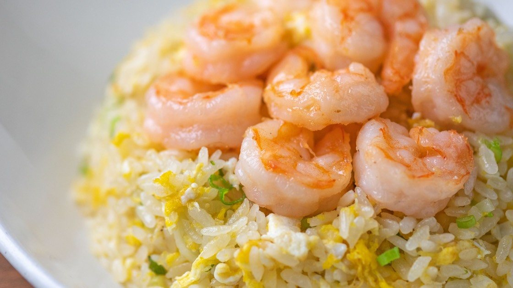

Shrimp Fried Rice

This recipes prepares a delicious plate of Shrimp Fried Rice made with shrimp, eggs, and vegetables.
This dish was inspired by the Din Tai Fung style but now in a homemade style, perfect for a weeknight dinner.
Ingredients
- 1 pound shrimp
- 2 eggs
- 1 cup cooked rice
- 1/4 cup soy sauce
- 1/4 cup oyster sauce
- 1/4 cup sesame oil
- 1/4 cup vegetable oil
- 1/4 cup green onions
- 1/4 cup peas
- 1/4 cup carrots
- 1/4 cup corn
- 1/4 cup bamboo shoots
- 1/4 cup seaweed
Instructions
- Cook the shrimp in a pan until pink.
- Whisk together the eggs in a bowl.
- Heat the sesame oil and vegetable oil in a pan.
- Add the eggs to the pan and scramble until cooked.
- Add the cooked rice to the pan and stir until heated through.
- Add the soy sauce, oyster sauce, green onions, peas, carrots, corn, bamboo shoots, and seaweed to the pan and cook until soft.
- Stir in the cooked shrimp.
- Season with salt and pepper.